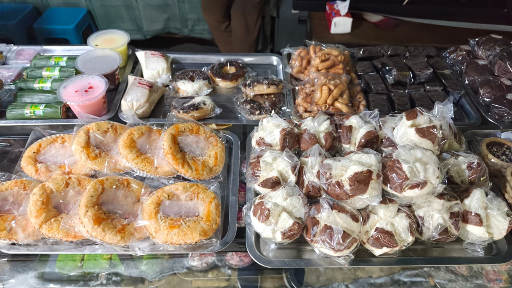
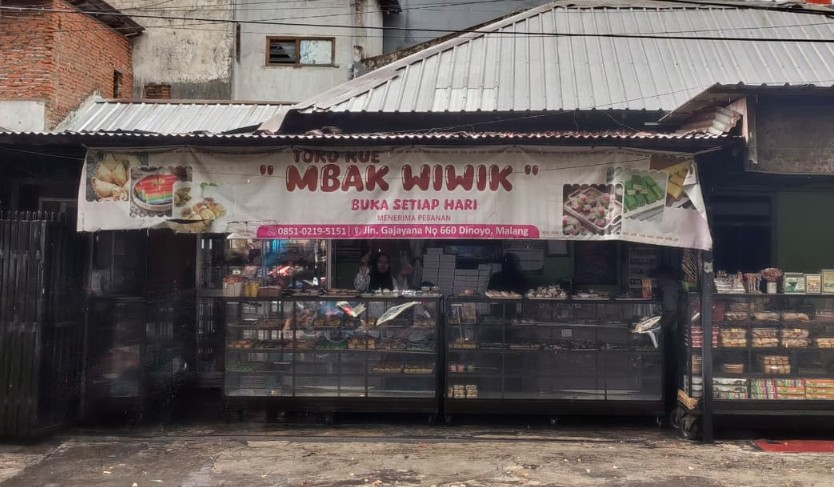
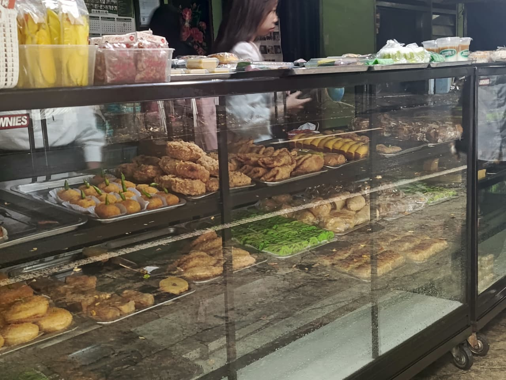
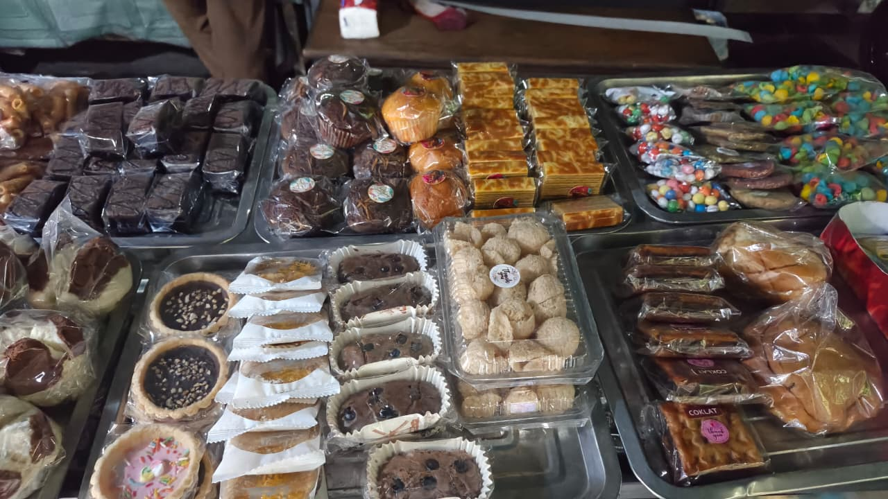
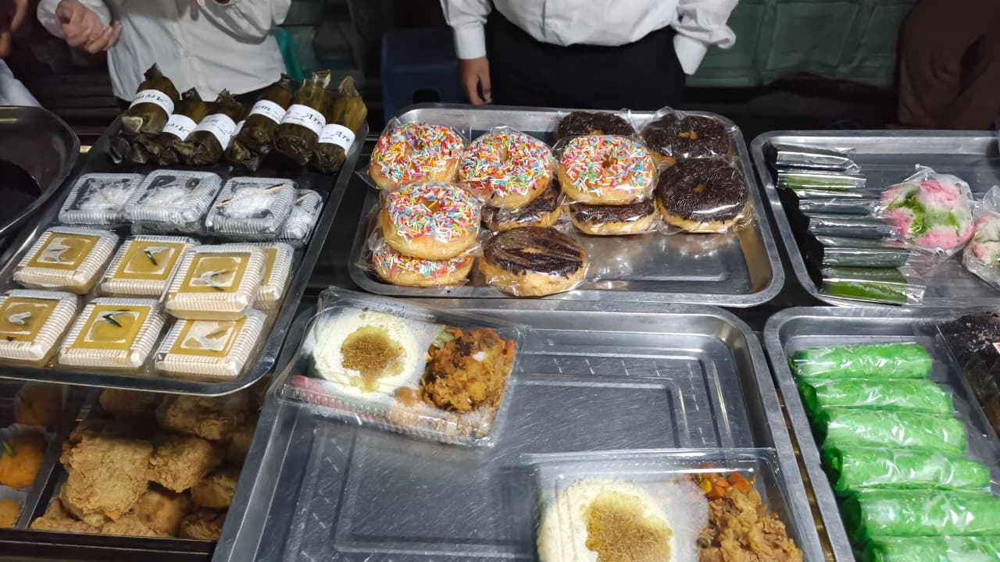
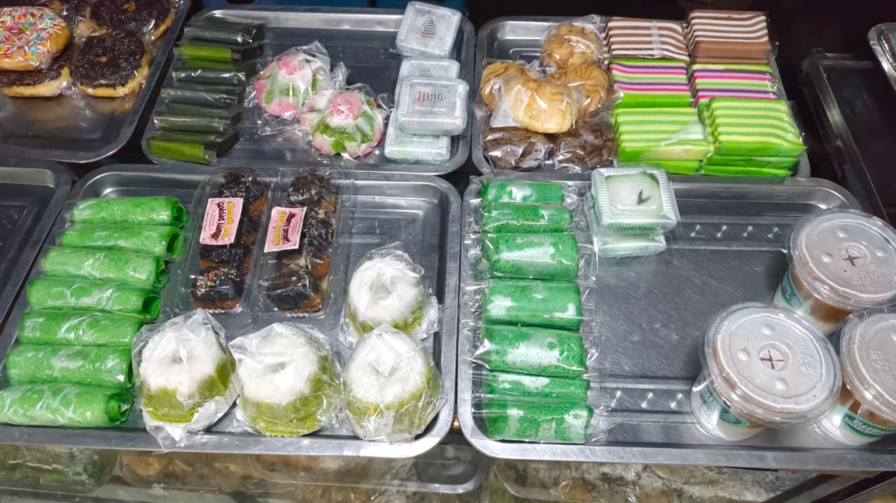

01Pilihan Jajanan 1
Aneka jajanan tradisional pilihan.
Cita rasa yang terus dijaga sejak 1991
Beragam pilihan jajanan tradisional untuk menemani hari dan berbagai momen spesial. Temukan pilihan favoritmu langsung di toko kami.

Rasa tradisional, cerita lintas generasi.
DINoyo, KOTA MALANGTentang perjalanan kami

Sebuah perjalanan sejak tahun 1991Usaha ini mulai dirintis pada tahun 1991 di kawasan Dinoyo, Kota Malang. Sebelum menekuni usaha jajanan tradisional, pemilik menjalani pekerjaan sebagai makelar jual beli mobil dan sepeda motor.
Seiring waktu, pemilik memilih beralih ke usaha jajanan tradisional karena dinilai lebih fleksibel. Dari usaha sederhana, toko ini kemudian dikenal oleh pelanggan dari berbagai daerah dan pernah melayani pesanan untuk sejumlah instansi, rumah sakit, serta hotel.
Dalam menjalankan usaha, toko tidak hanya menjual produk yang dibuat sendiri, tetapi juga menerima jajanan titipan dari produsen lain. Dengan begitu, toko menjadi tempat bagi berbagai produk lokal untuk bertemu dengan pelanggan.
Lebih dari sekadar berjualan
Di balik kegiatan sehari-hari, ada semangat untuk terus bertahan dan menjaga agar makanan tidak terbuang sia-sia.
Produk titipan dari produsen lain ikut dipasarkan melalui toko, membantu mempertemukan pembuat jajanan dengan pelanggan.
Produk yang tidak terjual dan masih layak konsumsi dapat disalurkan ke panti asuhan atau pondok pesantren.
Pilihan jajanan
Beragam jajanan tradisional tersedia untuk dinikmati bersama keluarga, teman, maupun dalam berbagai acara.

01Aneka jajanan tradisional pilihan.

02Beragam rasa untuk dinikmati bersama.

03Jajanan yang tersedia di toko.

04Pilihan jajanan yang bisa berubah setiap hari.
❧ Jenis dan ketersediaan jajanan dapat berubah setiap hari. Silakan datang langsung atau hubungi kami untuk mengetahui pilihan yang tersedia.
Temukan lokasi kami
Kami menantikan kunjunganmu. Datang langsung untuk melihat aneka jajanan tradisional yang tersedia.